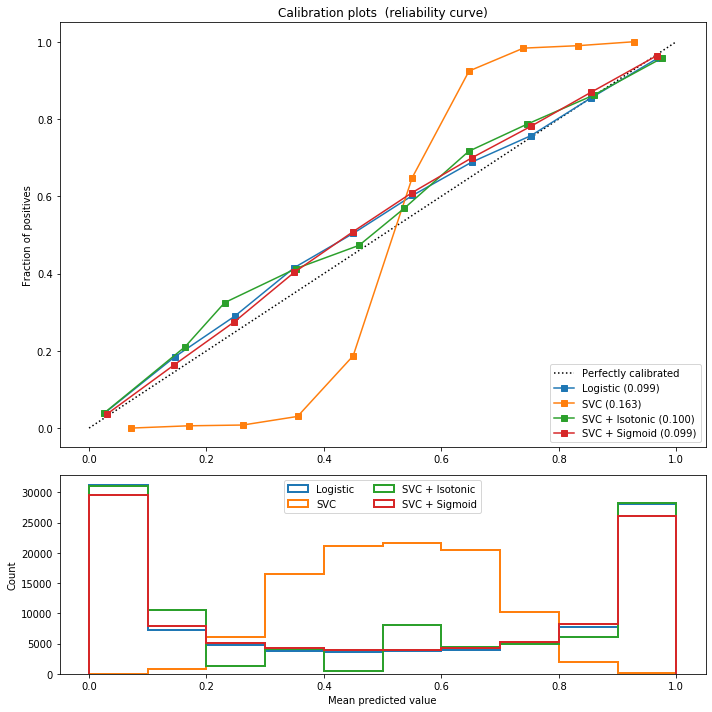

很多时候, 比如我们用机器学习模型做二分类问题时, 模型会对每个样本输出一个数值, 这个数值通常在0~1之间. 那么这个数值代表真实概率吗, 即该样本属于正样本的概率, 不一定.
不过我们通常也不关心这个数值是否等于属于正样本的概率, 因为我们用来处理排序任务时, 只要模型给出各样本数值的相对顺序不变, 排序效果就不会变.
但是偶尔当我们需要用模型来预测真实概率时, 比如想用模型来预测一个人的真实逾期率, 用以估计整体风险; 比如用模型来预测一个人对一个推送(如广告)的点击率, 即CTR, 来估算ROI(投入产出比). 此时, 我们需要概率校准.
基于逻辑回归的概率校准
首先说具体的方法流程, 非常简单:
- 得到原模型对样本的输出数值.
- 利用该模型的输出作为特征, 结合标签再训练一个逻辑回归模型.
- 新的逻辑回归模型的输出结果, 即为概率校准结果.
那么, 为什么逻辑回归模型会有概率校准的效果呢? 这其实与逻辑回归模型的损失函数有关:
对于逻辑回归来说, 就是要让最终估计的结果, 尽可能接近真实的标签. 通过对原始输入进行拉伸/压缩, 再通过逻辑回归函数进行非线性变换, 可以实现概率校准.
基于逻辑回归的概率校准方法的优点是用少量样本训练即可, 一般不会过拟合. 但缺点是, 并不是万能的, 对于一些模型”奇异”的输出, 简单的逻辑回归难以进行有效的概率校准.
基于保序回归的概率校准
神马是保序回归(Isotonic Regression)呢? 保序回归并不单单使用于模型校准, 在很多其他领域应用都很广泛.
其主要目的, 是将原本的一组非递增/递减的数组, 变换为递增/递减. 举几个栗子来说明算法会更好理解, 这里只考虑递增的情况:
- 一组数为$<1,2,3,4>$, 本身递增, 无需操作.
- 一组数为$<1,3,2,8>$, 从左到右遍历发现$3>2$, 将这两个数转换为均值, 即$<1,2.5,2.5,8>$.
- 一组数为$<1,3,2,2,5>$, 发现$3>2$, 转换后得到$<1,2.5,2.5,2,5>$, 继续遍历时又发现$2.5>2$, 于是将$3,2,2$转换为均值, 得到$<1,2.3,2.3,2.3,5>$.
那么如何将保序回归用于概率校准呢? 如当前数据集样本为$(\textbf{x}_i,y_i)$, 待校准模型为$f(\textbf{x})$, 可得到数据集$(f(\textbf{x}_i), y_i)$. 然后按$f(\textbf{x}_i)$进行(递增)排序, 得到新的序列$(f(\text{x}_j),y_j)$, 对序列$y_j$进行保序回归即可完成校准.
相比基于逻辑回归的概率校准, 基于保序回归的概率校准更加强大, 但风险是容易过拟合. 所以, 当数据量较小时, 优先尝试基于逻辑回归的概率校准, 效果不好的情况下再使用基于保序回归的概率校准.
负采样后的模型校准
在做二分类排序任务时, 有时候负样本数量远多于正样本数量, 我们可能会采取负样本下采样, 简称负采样的方法, 来优化建模过程. 不过这样带来的后果, 其实就是会导致预测的数值偏大, 若要回归真实的预测概率, 则需要进行概率校准.
在这种情况下进行概率校准, 不要依赖上述模型进行学习什么的, 直接利用公式即可:
其中, $p_r$表示校准后的概率, $p_s$表示负采样后的概率, $w$为负采样比例.
证明如下, 假设原本正样本数量为$N^+$, 负样本数量为$N^-$, 采样后的负样本数量$N^-_s=N^-\times w$, 此时正负样本的比例为:
采样后, 正负样本比例为:
结合上两式, 可得到:
由此可以推导出概率校准公式.
概率校准评估
一般使用Brier score来进行概率校准效果好坏的评估, 或者说, 模型输出数值是否接近真实概率的评估.
数学公式如下:
代码实例
在sklearn中, 有专门的针对概率校准的方法, 可供使用.
让我们一起大喊: sklearn, 永远滴神!
1 | import matplotlib.pyplot as plt |
1 | # 画朴素贝叶斯模型的概率校准图 |
1 | Logistic: |
可以看到, 在同一份样本上, 逻辑回归的输出是符合真实概率的, 而朴素贝叶斯不是. 同时对比校准结果, 发现基于逻辑回归的效果不好, 而基于保序回归的效果很好.
1 | # 画线性支持向量机(回归)的概率校准图 |
1 | Logistic: |

在这里, 对线性支持向量机的输出结果, 利用逻辑回归与保序回归都能得到不错的概率校准效果.
最后, 概率校准技术本身不会对模型输出结果的排序造成影响, 在一个数组外面套上一个逻辑回归函数, 或者使用保序回归, 不会改变数组的相对大小顺序. 但是, 有没有其它用法, 可以使用概率校准这个技术, 来提升模型表现呢?